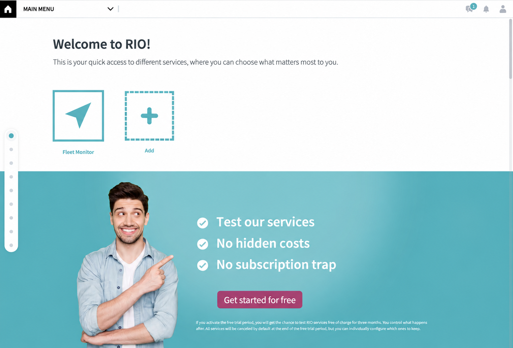

Voraussetzungen
Das benötigen Sie für den Start.
- Aktiver RIO Account
- Möglichst alle verfügbaren MAN LKW bei RIO aktiviert
- Admin User für den Vertragsabschluss
Free Trial aktivieren
In wenigen Schritten aktivieren Sie das kostenlose Testangebot für Ihre Fahrzeuge. Diese Anleitung führt Sie durch die Anmeldung, die Fahrzeugauswahl und die Aktivierung der gewünschten Dienste.
Voraussetzungen
Öffnen Sie die RIO Plattform und melden Sie sich mit Ihrem bestehenden Benutzerkonto an.
Wenn Sie die wenigen Voraussetzungen für den Start der kostenlosen Testphase erfüllt haben, werden Sie ein großes Banner auf Ihrer Startseite sehen. Klicken Sie darauf und folgen Sie den Anweisungen.

Wählen Sie gern alle verfügbaren MAN LKW aus.
Folgen Sie den weiteren Anweisungen und schließen Sie so den Bestellprozess ab. Ihnen entstehen keine Kosten und die Testphase endet automatisch nach 3 Monaten.